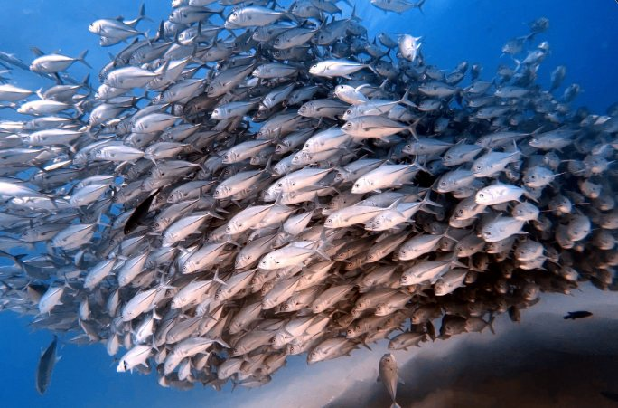
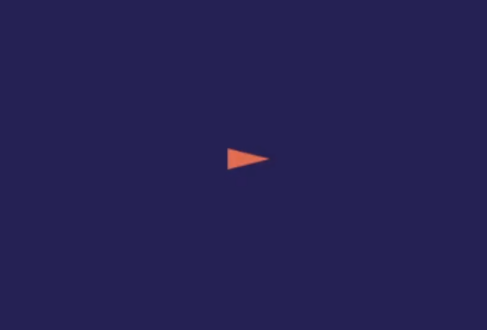
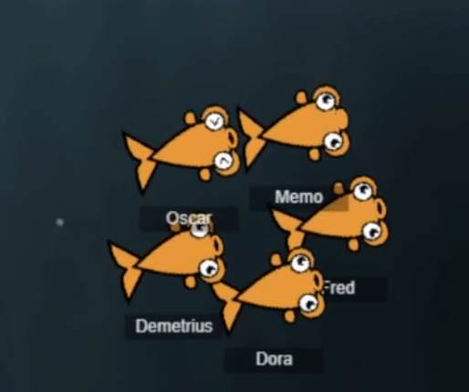
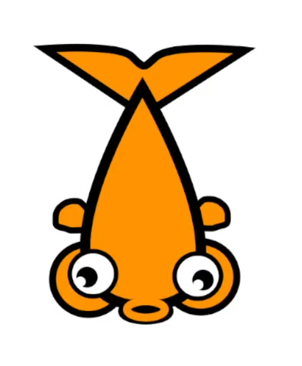
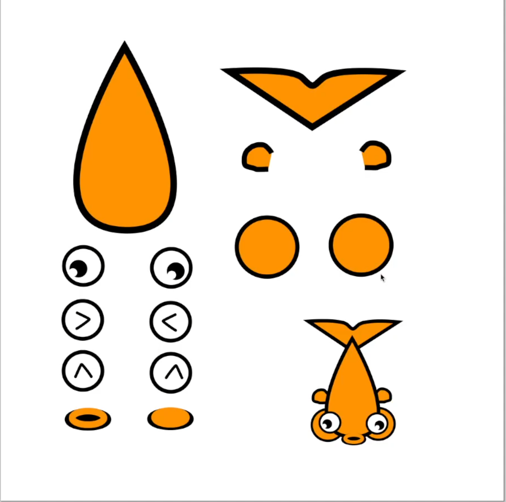

Fish Simulator
A browser fish swarm where simple local rules add up to a school that feels alive — and reacts to your mouse.
- Timeline
- April – May 2026
- Role
- Developer, Designer
- Tools
- JavaScript, Canvas
- Status
- MVP complete — expandable
The spark
I wanted to understand how a group of simple creatures could produce something that looks intelligent. Fish are a great example.
A single fish doesn't need to understand the entire school. Yet hundreds of fish can move together and produce incredibly cohesive patterns.
That raised a question: can I recreate that behavior myself?

The goal
Build a browser-based fish swarm that:
- Reacts to the mouse
- Moves naturally
- Looks like a real school of fish
- Produces emergent group behavior
- Runs smoothly with many fish
The goal wasn't a perfect biological simulation. It was to make something that felt alive.
The journey
-
Step 1
One fish
I started with the simplest possible problem: how do I make one fish move?

The very first fish: one triangle. -
Step 2
Many fish
Then: how do I make many fish move?
-
Step 3
Making them interact
Then: how do I make them interact? The system gradually evolved into a collection of behaviors controlling:
- Movement
- Separation
- Alignment
- Cohesion
- Mouse interaction
- Direction changes
- Group behavior
The interesting part was that no fish needed to know what the entire swarm was doing. Simple local rules created surprisingly complex behavior.

A small school moving together — Oscar, Memo, Fred, Demetrius, and Dora. -
Step 4
The whimsy problem
At some point, optimizing and tuning the simulation started becoming tedious.
Not every project needs to feel like serious engineering research. Sometimes you should just make the fish do something funny — and that made the project far more enjoyable to build and experiment with.


Meet Bibbles (left) and the sprite sheet behind the fish (right) — swappable eyes and mouths let them look calm, panicked, or happy. -
Step 5
Optimization
A few fish are easy. Hundreds of fish interacting every frame are a different problem.
I worked on reducing unnecessary calculations and keeping the simulation responsive.
What I learned
The Fish Simulator taught me about:
- Emergent behavior
- Agent-based systems
- Simple behavioral rules
- Animation
- Interaction design
- Performance optimization
- Iterative tuning
- Making technical projects visually engaging
It also reinforced something I want to carry into future projects: technical depth and playfulness don't have to be opposites.
What I'd change
If I rebuilt the project, I would:
- Push the sprites further into the background
- Dial in the gameplay/interaction loop earlier
- Spend less time polishing behavior before establishing the core experience
- Optimize for larger numbers of fish earlier
What's next
There are a lot of directions this could go:
- Sharks, fish food, and predator/prey behavior
- Different species with different behaviors
- More advanced swarm rules and larger schools
- Environmental obstacles
- Mobile compatibility and better performance
- A technical visualization mode with interactive parameter tuning
The technical version could become a sandbox for experimenting with emergent behavior. The playful version could become a little ecosystem.
Or, naturally, both.